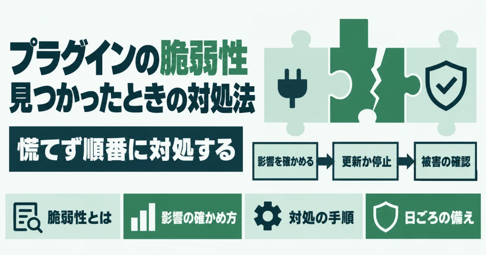
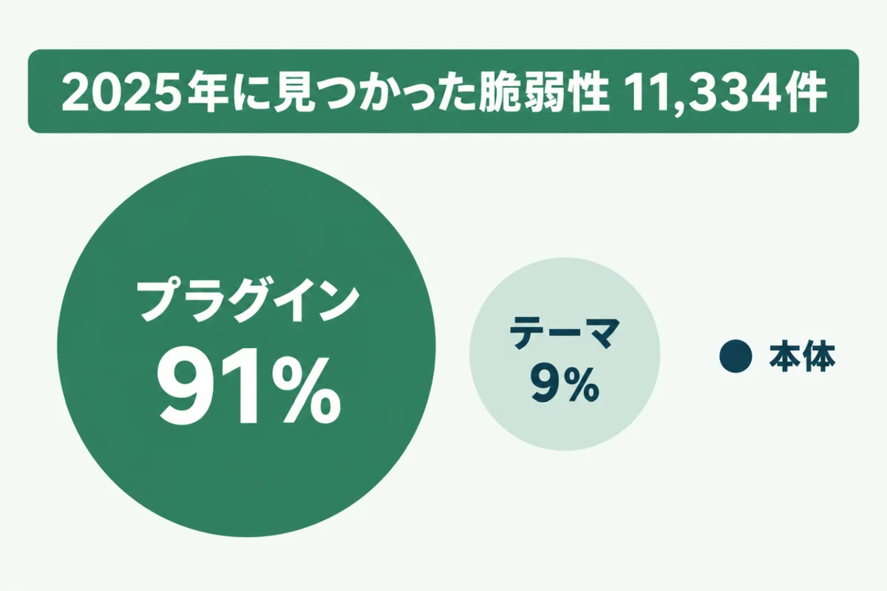
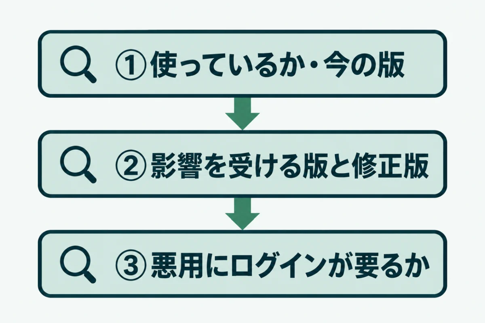
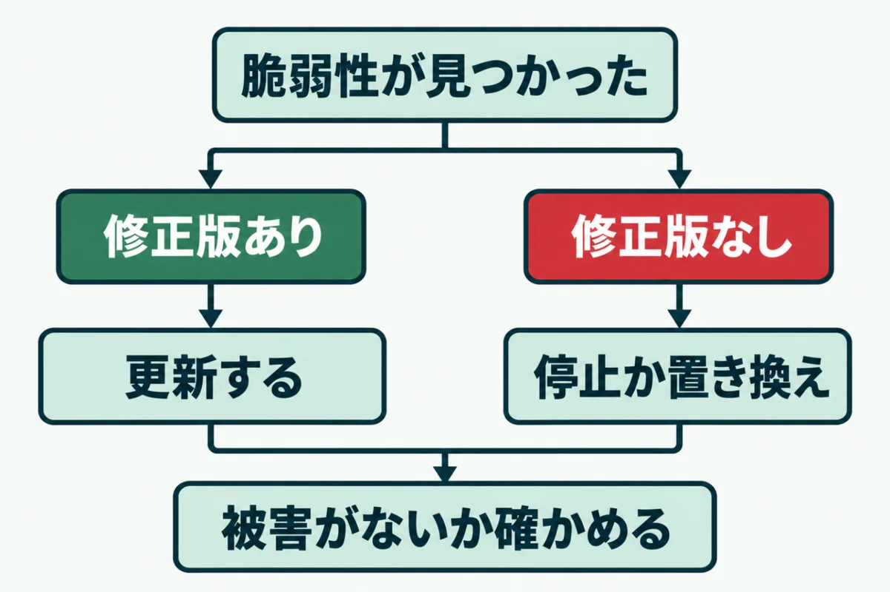
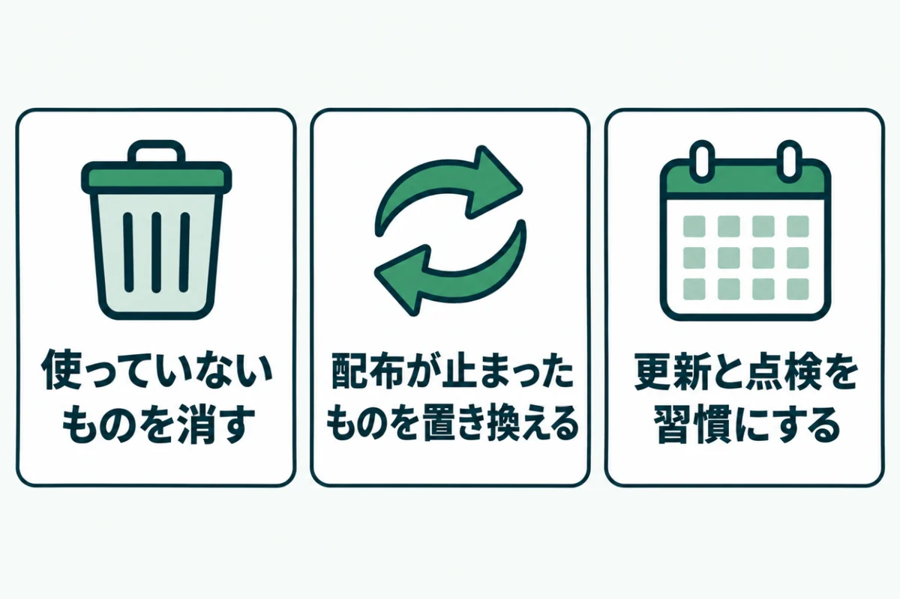

WordPressのプラグインに脆弱性が見つかったときの対処法

「使っているプラグインに脆弱性が見つかった」という通知を受けて、どうすればいいか迷っていませんか？
慌てて全部止めると、問い合わせフォームが動かなくなるなど、別の困りごとが起きます。
この記事では、WordPressのプラグインに脆弱性が見つかったときの対処を順に紹介します。自分のサイトに関係するかの確かめ方と、日ごろの備えもまとめました。
運営者が自社サイトで実際に対応した例も入れています。同じ場面に出会ったときに、落ち着いて動くための手順として使ってください。
WordPressのプラグインの脆弱性とは

WordPressのプラグインの脆弱性とは、プラグインのプログラムにある、悪用できる弱点のことです。本体より、プラグインで見つかることが多いのが特徴です。
プラグインは世界中の開発者が作っていて、品質も更新の頻度もそろっていません。よく使われるプラグインほど、弱点を探す人も多くなります。まずは、どのくらい見つかっているのかを知っておきましょう。
見つかる脆弱性の9割以上がプラグイン
脆弱性の情報を集めている Patchstack という会社が、毎年報告を出しています。それによると、2025年に見つかった脆弱性は11,334件でした。前の年より約42%増えています。
そのうち91%がプラグイン、9%がテーマで、本体はわずか6件でした。本体を最新にしていても、プラグインが古ければ守りきれないということです。テーマも、使っていないものまで含めて見直す必要があります。
公表の時点で直っていないこともある
同じ報告では、脆弱性の46%が、公表の時点で開発者から修正版が出ていませんでした。更新しようにも、新しい版がまだないということです。開発が止まったプラグインでは、修正版がずっと出ないこともあります。
よく悪用された脆弱性は、公表から最初の悪用まで中央値で5時間でした。高い影響の脆弱性の約半分は、24時間以内に悪用されていました。修正版を待つ間の対処も、あわせて知っておく必要があります。
WordPressのプラグインの脆弱性が自分のサイトに関係するか確かめる3つの方法

WordPressのプラグインの脆弱性の知らせを受けたら、まず自分のサイトに関係するかを確かめます。届いた知らせのすべてが、今すぐ対処すべきものとは限りません。
同じ名前のプラグインでも、使っている版によっては影響を受けないことがあります。知らせの多くは、特定の版より古いものだけが対象です。悪用の条件によっても、急ぐべき度合いは変わるでしょう。次の3つを順に確かめてください。
① 使っているかと今の版を確かめる
管理画面の「プラグイン」を開き、知らせに書かれたプラグインがあるかを探します。あれば、名前の下に出ている版の番号を控えてください。
停止しているプラグインも、サーバーに残っていれば弱点になることがあります。「停止中」の一覧も忘れずに見るようにしましょう。使っていないものなら、この機会に削除するのが安全です。
② 影響を受ける版と修正版を確かめる
脆弱性の情報には、「3.9.6以下」のように影響を受ける版と、直された版が書かれています。Patchstack や Wordfence などの脆弱性の一覧で、プラグインの名前を探してください。
今の版が修正版より新しければ、すでに直っています。検索結果の要約ではなく、元の情報で版を確かめるのが確実です。要約では、版の範囲が省かれていることがあります。
③ 悪用にログインが要るかを確かめる
脆弱性の情報には、悪用に必要な権限も書かれています。「Unauthenticated」はログインなしで悪用できるという意味で、最も急ぐべきものです。
「Administrator」なら管理者でログインしないと悪用できません。管理者が自分だけなら危険は小さめですが、更新しなくてよいという意味ではありません。パスワードが漏れれば、悪用される入口になります。
WordPressのプラグインに脆弱性が見つかったときの対処の手順

自分のサイトに関係すると分かったら、WordPressのプラグインの脆弱性に対処します。修正版があるかで、このあとにやることが大きく変わります。
どちらの場合も、作業の前にバックアップを取ってください。更新で表示が崩れても、元に戻せる状態にしておくと落ち着いて進められます。最後に、すでに悪用されていないかも確かめましょう。
修正版があれば更新する
修正版が出ていれば、管理画面の「プラグイン」から更新します。更新したら、サイトの表側と、そのプラグインを使う画面を開いて動きを確かめてください。
運営者の自社サイトでも、管理者権限が要る弱点が見つかったプラグインを修正版へ更新しました。データベースを不正に操作されるおそれのある弱点です。前後で全ページを比べ、表示が変わっていないことを確かめています。
修正版がなければ停止か置き換えを考える
修正版がまだ出ていない場合は、そのプラグインを止められるかを考えます。開発者の配布ページや掲示板で、修正の予定が書かれていないかも確かめてください。止めると困る機能なら、同じことができる別のプラグインへの置き換えを検討しましょう。
ログインなしで悪用できるものなら、修正版を待たずに止めるのが基本です。サーバーのWAF（攻撃を止める仕組み）を有効にしておくと、待つ間の守りになります。
被害がないかを確かめる
対処のあとは、すでに悪用されていないかを確かめます。管理画面の「ユーザー」に、見覚えのない管理者がいないかを見てください。知らないプラグインが増えていないかも確かめます。
サイトの表側も、検索結果に知らないページが出ていないかを確かめましょう。おかしな点が1つでもあれば、改ざんを疑って調べる必要があります。不安な場合は、専門家に相談するのが確実です。
WordPressのプラグインの脆弱性に日ごろから備える方法

WordPressのプラグインの脆弱性は、これからも見つかり続けます。知らせが来てから慌てないように、日ごろから弱点を減らしておくことが大切です。
難しい作業は必要ありません。プラグインの数を減らし、古いものを残さず、更新と点検を習慣にするだけで、狙われる入口は大きく減ります。どれも月に数十分あれば続けられる作業です。
使っていないプラグインを消す
試しに入れたままのプラグインはありませんか？昔の機能のために、残しているだけのものもあるでしょう。使っていないプラグインは、停止ではなく削除まで済ませてください。
プラグインが少ないほど、脆弱性の知らせに当たる回数も減ります。半年に1回は一覧を見直し、本当に必要なものだけを残しましょう。削除の前には、そのプラグインの設定や記録が要らないかも確かめておくと安心です。
配布が止まったものを置き換える
WordPress.orgでは、決まりに反したプラグインなどの配布が止められることがあります。作者が開発をやめて、自分から取り下げることもあるでしょう。配布が止まると、弱点が見つかっても直されません。
運営者の自社サイトにも、2022年に配布が止まったサイトマップのプラグインが残っていました。配布ページに「閉鎖」の表示がないかを、ときどき確かめてください。見つけたら、同じ機能の別のものへ置き換えます。
更新と点検を習慣にする
プラグインの更新は、月に1回など日を決めて確かめます。自動更新を使える場合は、よく使うプラグインから有効にするのも1つの方法です。
あわせて、外からの点検で版の遅れがないかを見ると、更新の漏れに気づけます。サイトドックの無料簡易診断なら、URLを入れるだけで外から見える範囲を確かめられます。
URLを入れるだけで、WordPressの版やプラグインの状態を含む7項目を無料で判定。登録はいりません。
無料で診断するWordPressのプラグインの脆弱性に関するよくある質問
プラグインの脆弱性は、どこで知ることができますか？
Patchstack や Wordfence などの脆弱性の一覧で、プラグインの名前から探せます。WordPressの管理画面でも、更新があるプラグインにはお知らせが出ます。ただし、お知らせは脆弱性があるかどうかまでは教えてくれません。セキュリティのプラグインやサーバー会社の通知を使うと、脆弱性の知らせを受け取りやすくなります。使っているプラグインの名前と版を一覧にして控えておくと、知らせが来たときにすぐ確かめられて便利です。
停止しているプラグインにも、脆弱性の危険はありますか？
あります。停止していても、プログラムのファイルはサーバーに残っているからです。ファイルに直接アクセスされると、弱点を突かれることがあります。不要なプラグインは、削除しておくのが安全です。必要になったら、そのときに新しい版を入れ直せば十分です。削除の前に、設定の控えが必要かどうかだけは確かめておきましょう。
更新したら、サイトが崩れることはありますか？
あります。特に、大きく版が上がる更新や、何年も更新していなかったプラグインは注意が必要です。更新の前にバックアップを取り、更新したらすぐに表示を確かめましょう。崩れた場合は、バックアップから戻すか、1つ前の版に入れ直して原因を調べます。本番とは別の検証用の環境で先に試せると、さらに安心できるでしょう。
修正版がなかなか出ないときは、どうすればいいですか？
まず、そのプラグインを止めても困らないかを考えます。止められるなら、修正版が出るまで止めておくのが安全です。止められない場合は、同じ機能の別のプラグインへの置き換えを検討しましょう。サーバーのWAFを有効にしておくと、待つ間の守りになります。長く修正版が出ないプラグインは、開発が止まっている可能性もあるため、置き換えを前向きに考えてください。
自分で判断するのが不安なときはどうすればいいですか？
制作会社や保守を頼んでいる会社に、脆弱性の知らせをそのまま見せて相談するのが確実です。そのとき、使っているプラグインの名前と版を伝えると、やりとりが早く進みます。今の状態が分からなければ、サイトドックの無料簡易診断で外から見える範囲を確かめられます。詳しく調べたい場合は、有料の詳細診断で、プラグインごとの影響まで確かめられるでしょう。
まとめ
WordPressで見つかる脆弱性の9割以上はプラグインのものです。知らせを受けたら、使っているか、影響を受ける版か、悪用にログインが要るかの3つを確かめてください。
修正版があれば更新し、なければ停止か置き換えを考えます。対処のあとは、見覚えのない管理者やページがないかを確かめましょう。
日ごろから使っていないプラグインを消し、月に1回は更新を確かめることが、いちばんの備えになります。
まずは、今の状態を知るところから。
URLを入れるだけで、数十秒で判定が出ます。登録はいりません。